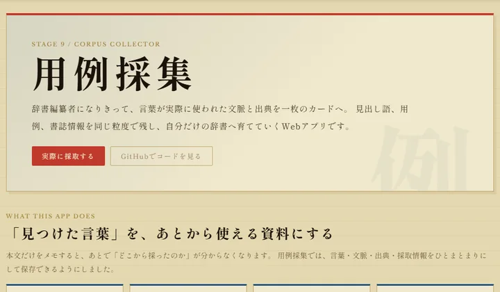
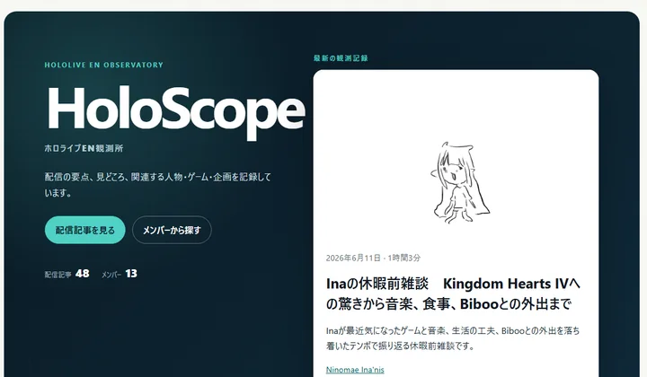
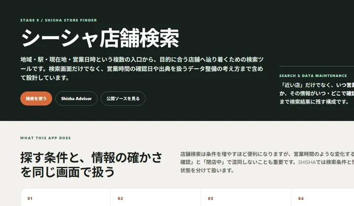

01

Dictionary / Web
用例採集
見出し語・用例・出典を採集し、自分だけの辞書を育てるWebアプリ。
SupabaseJavaScriptCSS
開く ↗
Selected / 03

Dictionary / Web
見出し語・用例・出典を採集し、自分だけの辞書を育てるWebアプリ。

Data / Operations / Web
観測データを収集・整理し、関係や傾向をWeb上で探索できる情報観測サービス。

Search / Data
地域・駅・現在地・営業時間などから店舗情報へ辿り着けるデータベース型検索ツール。
16 entries
システムエンジニア 4年。Web、データ、自動化、検索、表現をまたいで制作しています。
プロフィール詳細 ↗